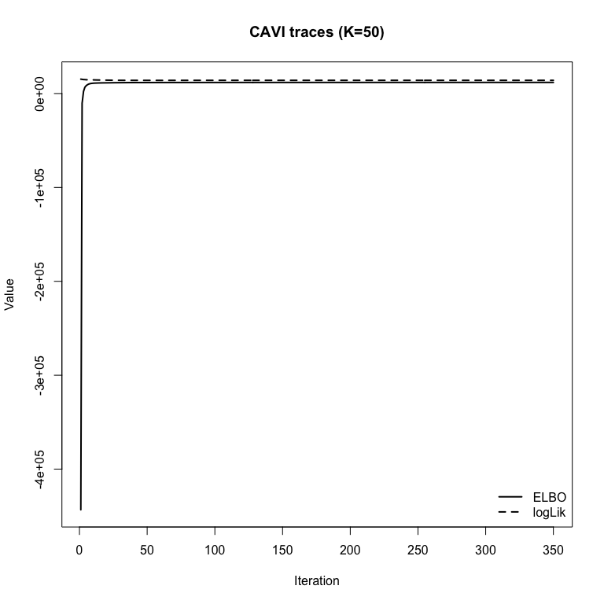
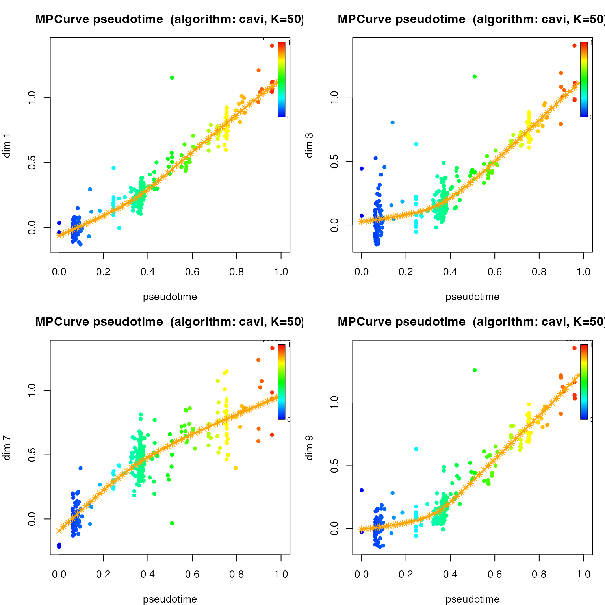
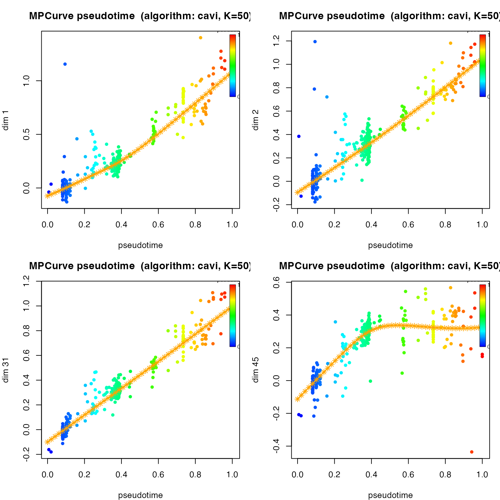
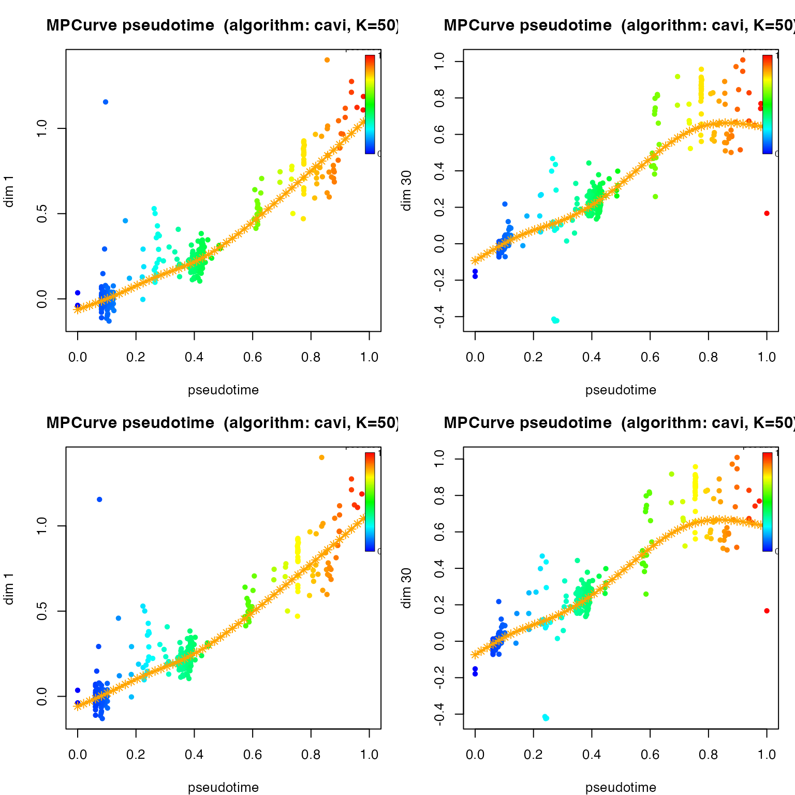

Overview
This vignette shows how to use the public fit_mpcurve()
interface on the eLife fitness dataset. The goal is not just to produce
a fit, but to explain the modeling logic step by step.
We will use MPCurver to answer three practical
questions:
- Can a single latent ordering explain mutant fitness across environments?
- If we encourage smoother trajectories, do we keep the same ordering while improving interpretability?
- Do the data support multiple ordering systems, or does a single ordering remain sufficient once we account for measurement error?
The recommended workflow throughout is the default cavi
backend exposed by fit_mpcurve().
Load package and data
if (requireNamespace("MPCurver", quietly = TRUE)) {
library(MPCurver)
} else if (requireNamespace("devtools", quietly = TRUE)) {
devtools::load_all(".", quiet = TRUE)
} else {
stop("Need either an installed MPCurver package or devtools::load_all().")
}
set.seed(42)
locate_elife_csv <- function() {
pkg_path <- system.file("extdata", "elife-61271-fig2-data1-v2.csv", package = "MPCurver")
if (nzchar(pkg_path) && file.exists(pkg_path)) {
return(pkg_path)
}
src_path <- file.path("inst", "extdata", "elife-61271-fig2-data1-v2.csv")
if (file.exists(src_path)) {
return(src_path)
}
stop("Could not locate elife-61271-fig2-data1-v2.csv.")
}
csv_path <- locate_elife_csv()
dat <- read.csv(csv_path, check.names = FALSE)
fitness_cols <- grep("_fitness$", names(dat), value = TRUE)
error_cols <- grep("_error$", names(dat), value = TRUE)
X <- as.matrix(dat[, fitness_cols, drop = FALSE])
mode(X) <- "numeric"
colnames(X) <- sub("_fitness$", "", fitness_cols)
S <- as.matrix(dat[, error_cols, drop = FALSE])
mode(S) <- "numeric"
colnames(S) <- sub("_error$", "", error_cols)
meta <- dat[, c("barcode", "gene", "type", "ploidy", "class", "mutation_type"), drop = FALSE]Just using the error columns as the true SEs might be too risky, so we will adjust the SEs using t-statistics-adjustment:
t_adjust_se <- function(Y, S, nu, tol = 1e-12) {
if (!is.matrix(Y) || !is.numeric(Y)) {
stop("`Y` must be a numeric matrix.")
}
if (!is.matrix(S) || !is.numeric(S)) {
stop("`S` must be a numeric matrix.")
}
if (!all(dim(Y) == dim(S))) {
stop("`Y` and `S` must have the same dimensions.")
}
if (any(S < 0, na.rm = TRUE)) {
stop("`S` must be nonnegative.")
}
if (length(nu) == 1L) {
if (!is.numeric(nu) || is.na(nu) || nu <= 0) {
stop("`nu` must be a positive number.")
}
nu_mat <- matrix(nu, nrow = nrow(Y), ncol = ncol(Y))
} else {
if (!is.matrix(nu) || !is.numeric(nu) || !all(dim(nu) == dim(Y))) {
stop("`nu` must be either a positive scalar or a numeric matrix with the same dimensions as `Y`.")
}
if (any(nu <= 0, na.rm = TRUE)) {
stop("All entries of `nu` must be positive.")
}
nu_mat <- nu
}
z_t <- Y / S
# Main calculation:
# S_tilde = S * z_t / qnorm(pt(z_t, df = nu))
p_t <- pt(z_t, df = nu_mat)
z_n <- qnorm(p_t)
S_tilde <- S * z_t / z_n
# Numerical fix for z_t close to 0:
# limit of z / qnorm(pt(z, df=nu)) as z -> 0 is dnorm(0) / dt(0, df=nu)
near_zero <- is.finite(z_t) & abs(z_t) < tol
if (any(near_zero, na.rm = TRUE)) {
limit_factor <- dnorm(0) / dt(0, df = nu_mat[near_zero])
S_tilde[near_zero] <- S[near_zero] * limit_factor
}
# Preserve zeros
zero_se <- (S == 0) & !is.na(S)
if (any(zero_se)) {
S_tilde[zero_se] <- 0
}
dimnames(S_tilde) <- dimnames(S)
S_tilde
}
S <- t_adjust_se(X, S, nu = 4)In this dataset:
- each row is a mutant;
- each column is an environment;
- each matrix entry is a fitness score;
- and the paired
*_errorcolumns provide observation-level measurement standard deviations that we can optionally pass tofit_mpcurve()viaS.
First look at the data
data.frame(
quantity = c("mutants", "environments", "fitness columns", "error columns"),
value = c(nrow(X), ncol(X), length(fitness_cols), length(error_cols))
) |>
knitr::kable()| quantity | value |
|---|---|
| mutants | 421 |
| environments | 45 |
| fitness columns | 45 |
| error columns | 45 |
sort(table(env_category), decreasing = TRUE) |>
as.data.frame() |>
stats::setNames(c("category", "n_environments")) |>
knitr::kable()| category | n_environments |
|---|---|
| time course | 10 |
| glucose / batch | 9 |
| other | 9 |
| drug / chemical | 8 |
| carbon source | 5 |
| salt stress | 4 |
This is a good MPCurver example because the environments span several broad condition types, while the mutants are shared across all columns. That makes it natural to ask whether the same latent mutant ordering explains every environment, or whether different subsets of environments prefer different orderings.
Step 1: Fit a single-ordering MPCurve
We start with the simplest question: can one latent ordering explain the main structure in the dataset?
The call below uses the main user-facing API:
-
method = "isomap"supplies the initialization; -
K = 50uses a 50-bin latent grid; -
rw_q = 2uses a second-order random-walk prior for smooth trajectories.
fit_unidir <- fit_mpcurve(
X,
method = "isomap",
K = 50,
rw_q = 2,
verbose = FALSE
)Check convergence
For the default cavi backend, the main quantity to
inspect is the ELBO trace.
plot(fit_unidir, plot_type = "elbo")Inspect a few fitted trajectories
par(mfrow = c(2, 2), mar = c(4, 4, 3, 1))
plot(fit_unidir, dims = 1)
plot(fit_unidir, dims = 2)
plot(fit_unidir, dims = 3)
plot(fit_unidir, dims = 4)
The first fit already recovers coherent structure, but the trajectories are still rougher than we would like for interpretation. This is a common pattern on real data: the latent ordering may be sensible even when the fitted curves need stronger regularization.
Step 2: Encourage smoother trajectories
We now refit the same single-ordering model, but add a stronger prior
on lambda_j through lambda_sd_prior_rate.
Larger values encourage smoother trajectories.
fit_unidir_smooth <- fit_mpcurve(
X,
method = "isomap",
K = 50,
iter = 500,
rw_q = 2,
lambda_sd_prior_rate = 1e4,
verbose = FALSE
)
plot(fit_unidir_smooth, plot_type = "elbo")
fit_unidir_smooth
#> MPCurve fit
#> Backend : cavi
#> Model : homoskedastic
#> n / d / K : 421 / 45 / 50
#> Iterations : 349
#> Position prior : adaptive
#> Converged : yes
#> ELBO (last) : 11842.508096
#> logLik (last): 14069.441003
par(mfrow = c(2, 2), mar = c(4, 4, 3, 1))
plot(fit_unidir_smooth, dims = 1)
plot(fit_unidir_smooth, dims = 3)
plot(fit_unidir_smooth, dims = 7)
plot(fit_unidir_smooth, dims = 9)
These curves are easier to read: the global ordering remains, but the fitted environment trajectories are less wiggly.
A useful sanity check is whether smoothing changes the inferred mutant ordering itself, or mainly changes the trajectory estimates.
cor(
fit_unidir_smooth$locations$mean$pseudotime,
fit_unidir$locations$mean$pseudotime
)
#> [1] 0.952165
plot(
fit_unidir_smooth$locations$mean$pseudotime,
fit_unidir$locations$mean$pseudotime,
xlab = "Latent position (smoother fit)",
ylab = "Latent position (less regularized fit)"
)
abline(0, 1, lty = 2)In this dataset the two fits stay close, which is reassuring: stronger regularization mostly improves interpretability rather than changing the basic ordering story.
Step 3: Ask whether one ordering is enough
The single-ordering fit assumes that every environment varies smoothly along the same latent mutant axis. That may be too restrictive. Some environments may reflect a different adaptation program and therefore prefer a different latent ordering.
To test that idea, we let fit_mpcurve() search over up
to four latent ordering systems using greedy backward selection. The
model starts with four orderings and prunes back to the optimal number
based on the ELBO.
fit_partition <- fit_mpcurve(
X,
method = "isomap",
intrinsic_dim = 4,
greedy = "backward",
ridge = 1e-6,
K = 50,
iter = 500,
rw_q = 2,
lambda_sd_prior_rate = 1e4,
verbose = FALSE
)
fit_partition
#> MPCurve partition fit
#> Backend : cavi
#> Greedy search : backward (upper bound 4 -> selected 3)
#> Dim (req/act/view): 3 / 3 / 3
#> n / d / K : 421 / 45 / 50
#> Partition : A=35, B=1, C=9
#> Active : A, B, C
#> Position prior : adaptive
#> Partition prior: adaptive
#> Objective (last): 12526.762490
#> Objective type : fixed-requested-M comparison
#> Converged : TRUE
#> Phase-2 rel_delta : 9.154e-06
#> Small-step streak: 3
#> Reason : Phase-2 rel_delta stayed below 1.0e-05 for 3 consecutive nonnegative steps.Which environments were assigned to which ordering?
assignment_tbl <- data.frame(
environment = colnames(X),
category = env_category,
ordering = fit_partition$partition$assign,
stringsAsFactors = FALSE
)
assignment_tbl[order(assignment_tbl$ordering, assignment_tbl$category, assignment_tbl$environment), ] |>
knitr::kable(row.names = FALSE)| environment | category | ordering |
|---|---|---|
| 0.5% Raf | carbon source | A |
| 1.5% Suc, 1% Raf | carbon source | A |
| 1% Gly | carbon source | A |
| 1% Raf | carbon source | A |
| 0.5% DMSO | drug / chemical | A |
| 17 μM GdA | drug / chemical | A |
| 2 μg/ml Flu | drug / chemical | A |
| 8.5 μM GdA (B1) | drug / chemical | A |
| 8.5 μM GdA (B9) | drug / chemical | A |
| 1.4% Gluc | glucose / batch | A |
| 1.8% Gluc | glucose / batch | A |
| Baffle (B8) | glucose / batch | A |
| Baffle (B9) | glucose / batch | A |
| Baffle, 1.4% Gluc | glucose / batch | A |
| Baffle, 1.6% Gluc | glucose / batch | A |
| Baffle, 1.7% Gluc | glucose / batch | A |
| Baffle, 1.8% Gluc | glucose / batch | A |
| Baffle, 2.5% Gluc | glucose / batch | A |
| EC 1BigBatch | other | A |
| EC Batch 13 | other | A |
| EC Batch 18 | other | A |
| EC Batch 19 | other | A |
| EC Batch 20 | other | A |
| EC Batch 21 | other | A |
| EC Batch 23 | other | A |
| EC Batch 3 | other | A |
| EC Batch 6 | other | A |
| 12 hr Ferm | time course | A |
| 18 hr Ferm | time course | A |
| 22 hr Ferm | time course | A |
| 3 Day | time course | A |
| 4 Day | time course | A |
| 5 Day | time course | A |
| 6 Day | time course | A |
| 8 hr Ferm | time course | A |
| 7 Day | time course | B |
| 1% EtOH | carbon source | C |
| 0.5 μg/ml Flu | drug / chemical | C |
| Baffle, 0.4 μg/ml Ben | drug / chemical | C |
| Baffle, 2 μg/ml Ben | drug / chemical | C |
| 0.2 M KCl | salt stress | C |
| 0.2 M NaCl | salt stress | C |
| 0.5 M KCl | salt stress | C |
| 0.5 M NaCl | salt stress | C |
| 1 Day | time course | C |
How similar are the inferred orderings?
ordering_names <- names(fit_partition$locations)
ordering_names <- ordering_names[ordering_names %in% unique(fit_partition$partition$assign)]
t_df <- setNames(
as.data.frame(lapply(ordering_names, function(nm) {
fit_partition$locations[[nm]]$mean$pseudotime
})),
ordering_names
)
cor(t_df) |>
knitr::kable(digits = 3)| A | B | C | |
|---|---|---|---|
| A | 1.000 | -0.617 | 0.202 |
| B | -0.617 | 1.000 | -0.617 |
| C | 0.202 | -0.617 | 1.000 |
Step 4: Refit with known measurement error
The raw file includes paired *_error columns, and
fit_mpcurve() can use them directly through the
S argument. In the public API, S is
interpreted as a matrix of known measurement standard deviations.
This matters here because ignoring heterogeneous measurement error can make the model over-explain noisy columns by introducing extra orderings.
Single-ordering fit with known measurement SD
fit_unidir_known_sd <- fit_mpcurve(
X,
S = S,
method = "isomap",
K = 50,
iter = 500,
rw_q = 2,
lambda_sd_prior_rate = 1e4,
verbose = FALSE
)
plot(fit_unidir_known_sd, plot_type = "elbo")
par(mfrow = c(2, 2), mar = c(4, 4, 3, 1))
plot(fit_unidir_known_sd, dims = 1)
plot(fit_unidir_known_sd, dims = 2)
plot(fit_unidir_known_sd, dims = 31)
plot(fit_unidir_known_sd, dims = 45)
Greedy search with known measurement SD
We first try forward selection to see whether the data support multiple orderings once we account for measurement error. This approach starts with a single ordering and adds orderings until the ELBO stops improving.
fit_partition_known_sd <- fit_mpcurve(
X,
S = S,
method = "isomap",
intrinsic_dim = 4,
greedy = "forward",
ridge = 1e-6,
K = 50,
iter = 500,
rw_q = 2,
lambda_sd_prior_rate = 1e4,
verbose = FALSE
)
fit_partition_known_sd
#> MPCurve fit
#> Backend : cavi
#> Greedy search : forward (upper bound 4 -> selected 1)
#> Model : homoskedastic
#> n / d / K : 421 / 45 / 50
#> Iterations : 235
#> Position prior : adaptive
#> Converged : yes
#> ELBO (last) : 13531.873663
#> logLik (last): 16205.048990It is also useful to check the same question from the other direction by starting from the upper bound and pruning redundant orderings.
fit_partition_known_sd_backward <- fit_mpcurve(
X,
S = S,
method = "isomap",
intrinsic_dim = 4,
greedy = "backward",
ridge = 1e-6,
K = 50,
iter = 500,
rw_q = 2,
lambda_sd_prior_rate = 1e4,
verbose = FALSE
)
fit_partition_known_sd_backward
#> MPCurve fit
#> Backend : cavi
#> Greedy search : backward (upper bound 4 -> selected 1)
#> Model : homoskedastic
#> n / d / K : 421 / 45 / 50
#> Iterations : 197
#> Position prior : adaptive
#> Converged : yes
#> ELBO (last) : 13591.042390
#> logLik (last): 16229.890897When both forward and backward selection collapse back to a single ordering, that is strong evidence that the earlier higher-dimensional fit was mainly absorbing noise heterogeneity rather than revealing genuinely distinct latent systems.
Compare the forward and backward single-ordering solutions
cor(
fit_partition_known_sd$locations$mean$pseudotime,
fit_partition_known_sd_backward$locations$mean$pseudotime
)
#> [1] 0.999151
plot(
fit_partition_known_sd$locations$mean$pseudotime,
fit_partition_known_sd_backward$locations$mean$pseudotime,
xlab = "Latent position (forward search)",
ylab = "Latent position (backward search)"
)
abline(0, 1, lty = 2)Though both methods find a single ordering.
par(mfrow = c(2, 2), mar = c(4, 4, 3, 1))
plot(fit_partition_known_sd, dims = 1)
plot(fit_partition_known_sd, dims = 30)
plot(fit_partition_known_sd_backward, dims = 1)
plot(fit_partition_known_sd_backward, dims = 30)
Takeaways
This dataset gives a useful template for real-world
fit_mpcurve() analyses.
- Start with a single-ordering fit to establish the basic latent ordering.
- Use
lambda_sd_prior_ratewhen the ordering looks sensible but the fitted trajectories are too rough to interpret comfortably. - Use
intrinsic_dimtogether with greedy search to test whether the data support multiple ordering systems. - If measurement error is available, pass it through
S; otherwise the model may over-split noisy environments into extra orderings.